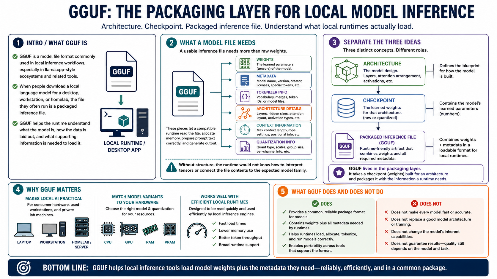

What Is GGUF?
Connecting to LMS... Progress: in progress

Narration
GGUF is a model file format commonly used in local inference workflows, especially in llama.cpp-style ecosystems and the tools built around them. When people download a local language model for a desktop, workstation, or homelab, the file they actually run is often a packaged inference file. GGUF helps that runtime understand what the model is, how the data is laid out, and what supporting information is needed to load it.
A model file needs more than raw numbers. It needs weights, metadata, tokenizer information, architecture details, context information, and often quantization information. Those pieces let a compatible runtime read the file, allocate memory, prepare prompt text correctly, and generate output. Without structure, the runtime would not know how to interpret the tensors or how to connect the file contents to the model family it expects.
It is useful to separate three ideas: architecture, checkpoint, and packaged inference file. Architecture describes the model design, such as how layers and attention are arranged. A checkpoint is a saved set of learned weights for that architecture. A packaged inference file is a runtime-friendly artifact that combines weights and metadata in a format a tool can load. GGUF lives in that packaging layer.
GGUF matters because it makes local AI more practical on consumer hardware, used workstations, and private lab machines. It supports model variants that can be loaded by efficient runtimes and matched to available CPU, GPU, RAM, and VRAM. The format does not make every model fast or accurate by itself, but it gives local inference tools a common way to package and read model data reliably.